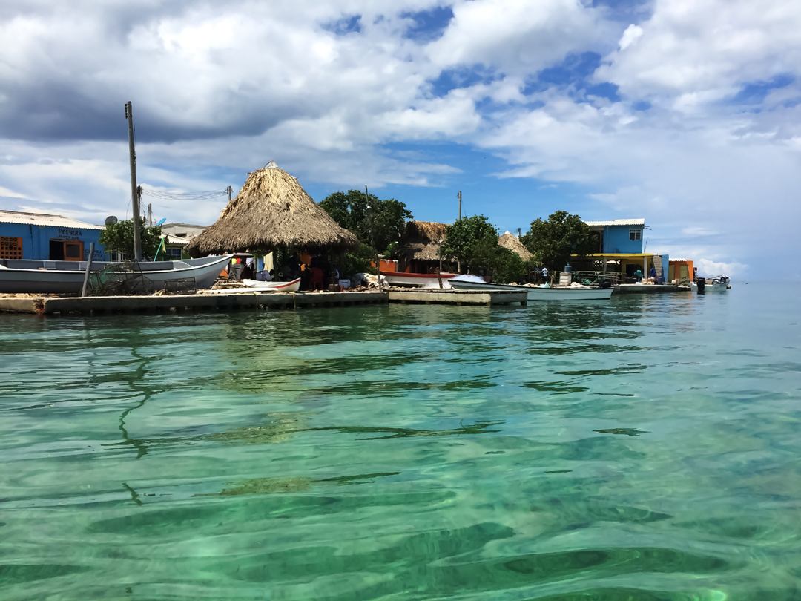
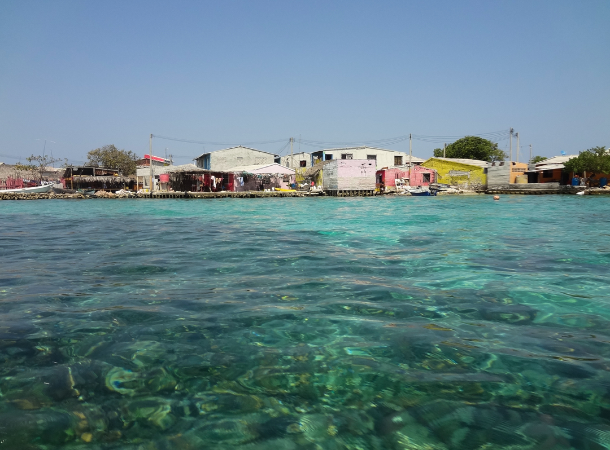
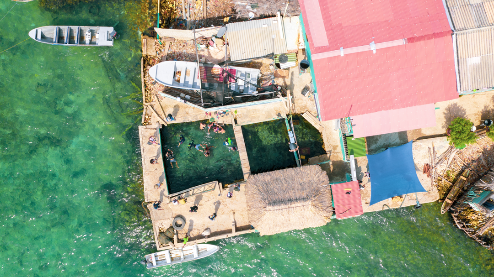

<div class="modal">
  <div class="modal-body">
    <header class="modal-body-header">
      
      
      

    </header>
    <section class="modal-body-main">
      <div class="modal-body-main-imagenes">
        
        <div class="contendor-imagenes">
          
        
        </div>
      </div>
      <div class="modal-body-main-contenido">
        <a [routerLink]="['/']">x</a>

        <h1>SANTA CRUZ DEL ISLOTE </h1>
        <h3>Una Joya Insular en el Mar Caribe Colombiano </h3>
        <p>Bienvenido a Santa Cruz del Islote, un pequeño paraíso en el Mar Caribe colombiano que desafía las expectativas y cautiva los corazones de quienes tienen la suerte de descubrirlo. Este diminuto islote, situado frente a las costas de Colombia, es una maravilla arquitectónica y cultural que te invita a explorar su encanto único y su vibrante comunidad.  </p>


          <h2>Un Pueblo en el Mar </h2>
          <p>Santa Cruz del Islote es conocido como uno de los lugares más densamente poblados del mundo. A pesar de su pequeño tamaño, alberga a una comunidad cálida y acogedora que vive en coloridas casas de madera y disfruta de la vida en estrecha armonía con el mar. Las estrechas calles empedradas te llevan a través del pueblo, donde los residentes te reciben con sonrisas amistosas y cuentan historias sobre la vida en el islote. </p>
        
          <h2>Playas de Arena Blanca y Aguas Turquesas </h2>
          <p>Las playas de Santa Cruz del Islote son verdaderamente paradisíacas. Arena blanca y suave se encuentra con aguas turquesas y cristalinas, creando un entorno idílico para relajarse y disfrutar del sol. Sumérgete en el mar refrescante, haz snorkel para explorar los arrecifes de coral cercanos o simplemente relájate en la playa y admira las vistas panorámicas del océano.   </p>

          <h2>Pesca y Gastronomía Local  </h2>
          <p>La pesca es una parte integral de la vida en Santa Cruz del Islote. Los pescadores locales salen al mar todos los días para capturar una variedad de deliciosos mariscos que se convierten en ingredientes frescos para los platos locales. Prueba las exquisiteces del mar preparadas con las recetas tradicionales de la región, disfruta del ceviche fresco y otros manjares marinos que te ofrecen una experiencia culinaria auténtica.  </p>

          <h2>Cultura y Tradiciones </h2>
          <p>A pesar de su pequeño tamaño, Santa Cruz del Islote es un lugar lleno de cultura y tradiciones vibrantes. Los habitantes celebran festivales coloridos, con música, danzas y comidas típicas que reflejan la riqueza cultural del Caribe colombiano. Únete a las celebraciones locales y descubre la alegría y la vitalidad de esta comunidad única en el mar. </p>

          <h2>Turismo Sostenible y Conservación </h2>
          <p>Santa Cruz del Islote se enorgullece de su enfoque en el turismo sostenible y la conservación del medio ambiente. Los residentes y los visitantes trabajan juntos para preservar la belleza natural del islote y proteger la vida marina que lo rodea. Participa en iniciativas de conservación, aprende sobre la flora y fauna local y contribuye a mantener este paraíso marino para las generaciones futuras. </p>

          <h2>Cómo Llegar </h2>
          <p>Para llegar a Santa Cruz del Islote, los visitantes pueden tomar un barco desde el puerto de La Bodega, ubicado cerca de la ciudad de Cartagena. El viaje en barco te brinda la oportunidad de disfrutar de las vistas panorámicas del Caribe mientras te diriges hacia este pequeño paraíso en medio del océano.  </p>
      </div>
    </section>
    <footer>
      
    </footer>
  </div>
</div>
